This part is meant to help you use the map: what should you see, what it means and how to use its functionalities. Use the arrows beside the headers to read each section.
When you first open the map, you’ll see a caption panel on the left that appears automatically. Use it as a map legend: the colors shown here match those on the map, and each layer (or type of information) includes a brief description to help you understand what you’re seeing. You can also use the arrow on the upper right to expand it.
This map covers a large area, so zooming in and out is essential to explore everything. You can use your mouse wheel or the + and – buttons on the left side of the window
To move around the map, simply click and drag with your mouse.
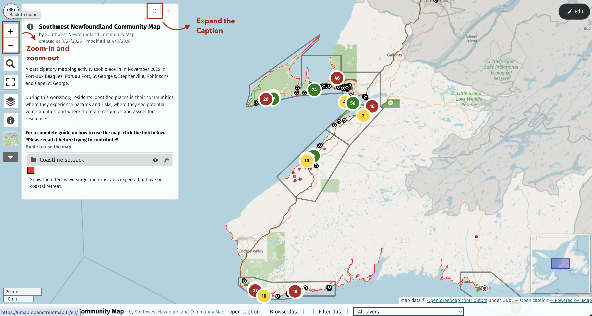
If you lose or close the legend and want to see it again, simply click on the i symbol on the left pannel:
You can click on any feature in the map to get more information about it. A pop-up will open, like so:
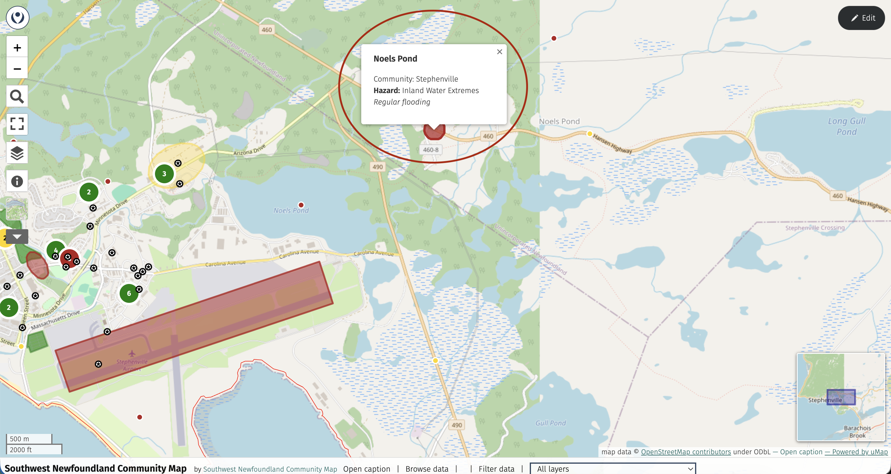
In the legend window (or caption panel), you can toggle layers on and off. This means you can change the map view to make certain information appear or disappear.
You will see an eye symbol next to each layer’s title. Click it to toggle the layer.
When a layer is turned off, its title will be greyed out.
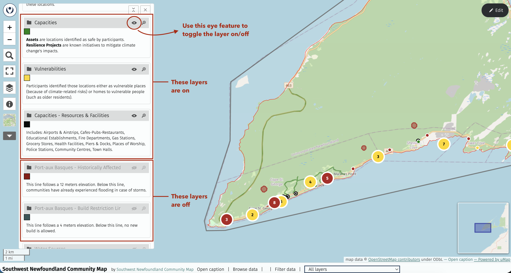
When using this feature, pay attention to how the map changes!
The Filter feature is another way to control what is visible on the map. There are several ways to access it:
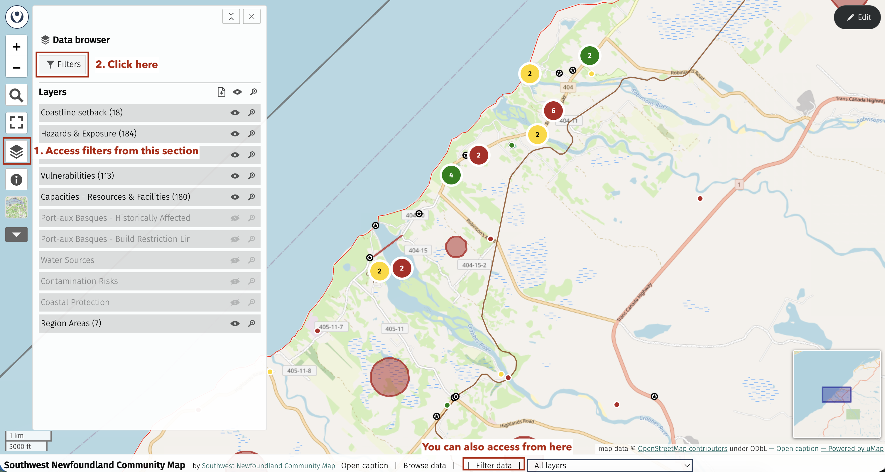
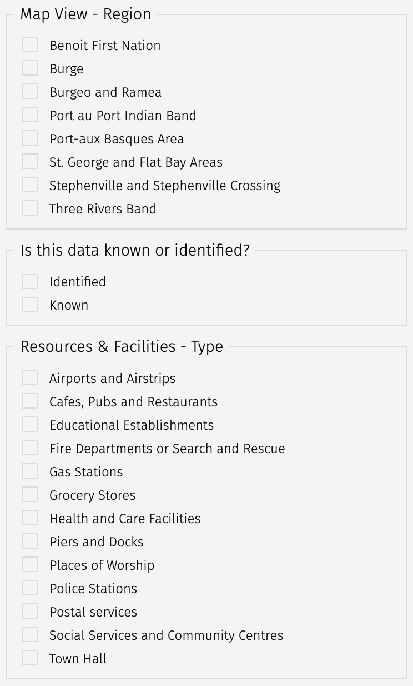
You can filter the information by region: only data related to the selected regions will be displayed.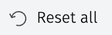
When you expend the controls panel on the left, you can access multiple useful tools
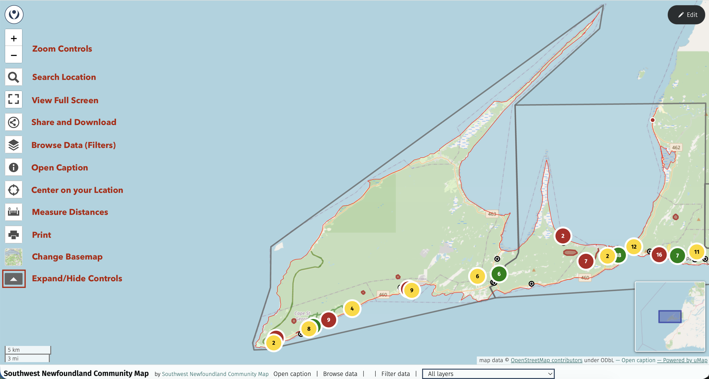
This tool allows you to type in any location in the area, it will then automatically take you to that place. The example below searches for "Marches Point"
You can also type in coordinates.
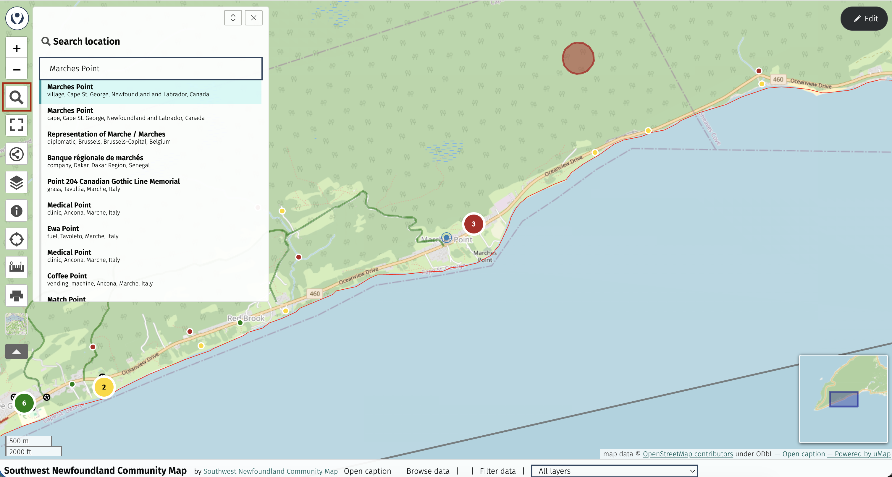
You can use this tool to change the background of the map. Feel free to explore and choose the one that helps you locate yourself or interpret the information the best !
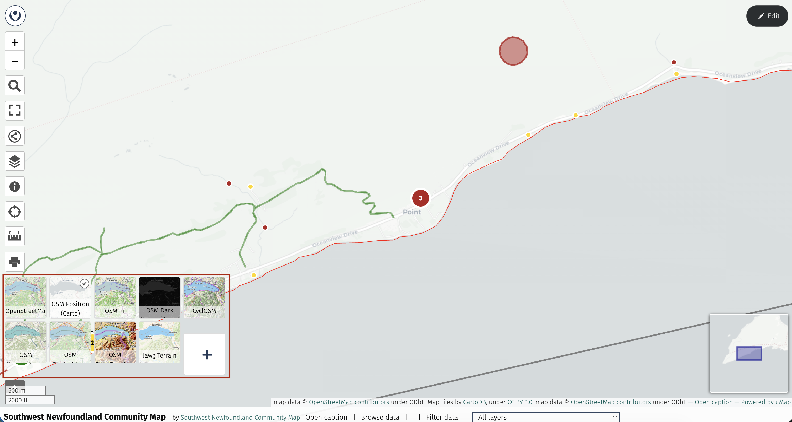
TThis tool lets you measure the distance between two locations. Click on your first location, then on the second, and the distance will be displayed. You can choose the unit: kilometers, miles, or nautical miles. When you’re finished, simply click the tool again to close it.
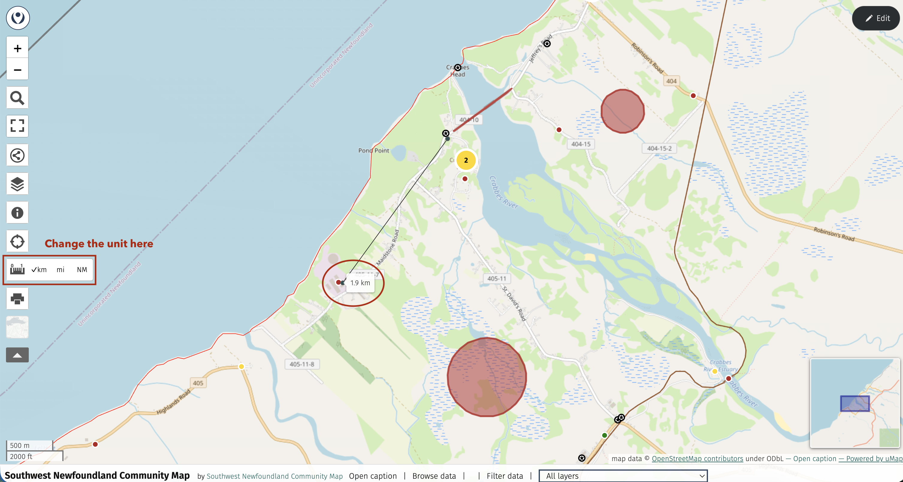
Share the map with friends and family using one of the first two links, or embed it on your website!
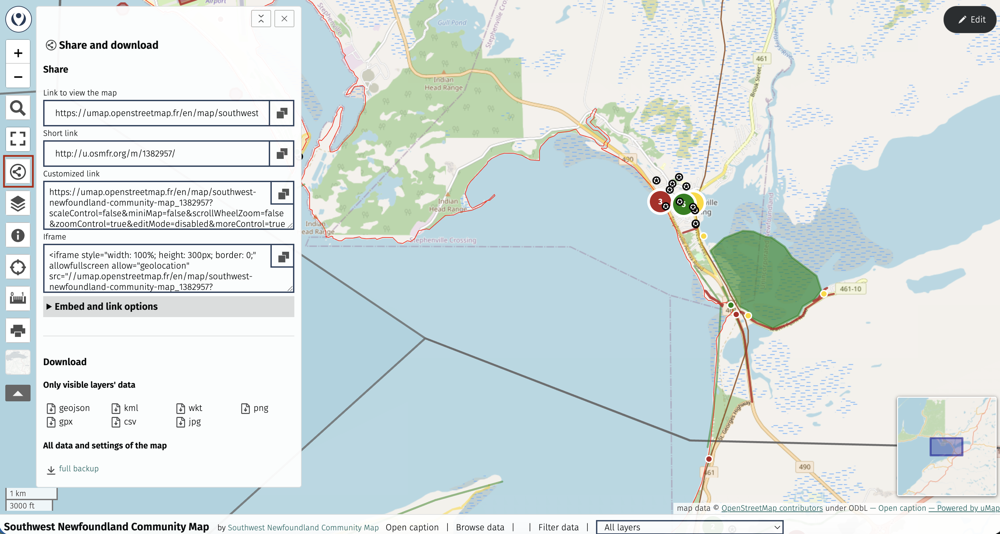
You can only add or modify information into these three layers : Hazards & Exposure, Capacities, Vulnerabilities. These are the layers where we stock information about residents' feelings and observations regarding climate risks and resilience opportunities in their community.
Please, only add information related to this topic.
If you intend on contributing to the map, please make sure you read carefully the sections below. For the map to remain clean, a few rules are needed!